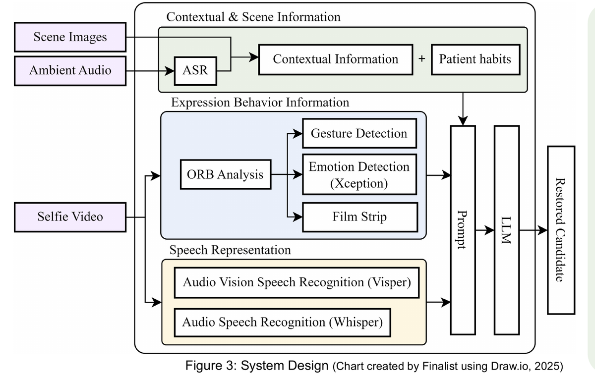
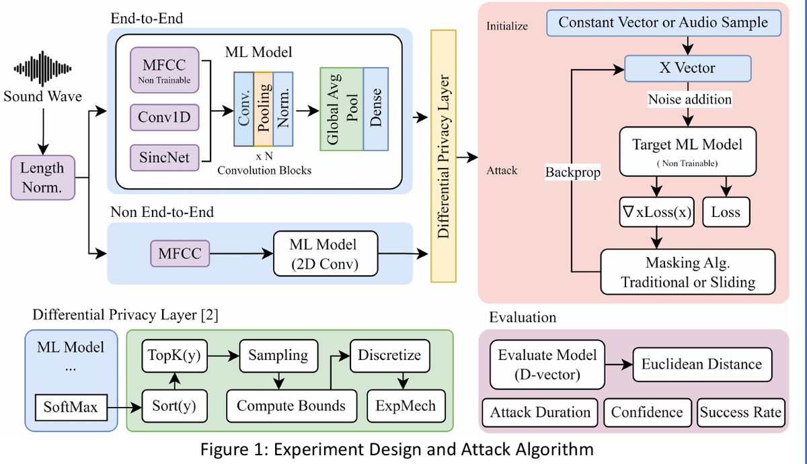

About
I'm a freshman at National Taiwan University CSIE, and I spent the last three years in Hualien teaching myself machine learning by shipping research: AphaSpeak, a multimodal system that reconstructs speech for people with aphasia (Taiwan's ISEF 2026 delegation), and a first-author study on inverting speaker models to extract the voices they were trained on.
The pattern behind both: I like building a system end to end, then attacking its weakest assumption. Right now I'm looking for a research group where I can learn what self-study can't teach — the judgment of people who have trained things at scale.
Abilities
LLM post-training
QLoRA fine-tuning, distillation-recipe and evaluation design — built a choice-filtered distillation pipeline end to end.
AI security
Gradient-based model-inversion attacks, differential-privacy defenses, and the red-team habit of asking what leaks.
Real-time ML systems
Async WebSocket streaming, priority scheduling, multiprocessing around Python's GIL, CTC decoding with mixed precision.
Foundations
Python / PyTorch, C++ and competitive programming; research written and presented in English at international fairs.
Research
AphaSpeak — multimodal communication for aphasia ↗
Fuses speech, lip reading, gesture and scene context into ranked candidate sentences — 0.91 cosine similarity, +10% over a text-only LLM, running under 4 seconds end to end.

Inversion attacks on speaker models ↗
First-author attack-and-defense study: how raw-waveform, SincNet and MFCC front-ends differ in voice-trait leakage, and where DP-SGD actually helps.
